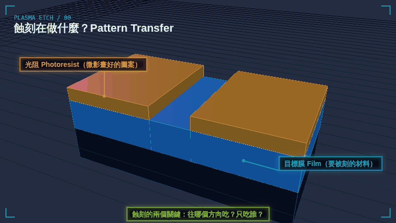
GIF 00
蝕刻在做什麼 Pattern Transfer
光阻（photoresist）上已經有微影畫好的開口。蝕刻把開口下方的目標膜吃掉，移除光阻後，圖案就留在材料上。
下載 1080P GIF（4.2 MB）PLASMA ETCHING / 3D GIF
從「打 RF 之後發生什麼」開始：電子怎麼撞出離子和自由基、鞘層怎麼讓離子垂直加速，接著比較等向性與非等向性、說明選擇比，最後看它們在 Nanosheet 怎麼用，以及為什麼奈米級圖案不用濕蝕刻。13 張 3D 動畫 GIF，每張都可以下載 1080P 放進簡報。
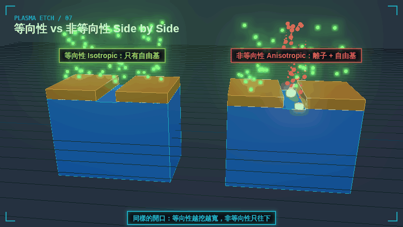
PART 0 / WHAT
微影只把圖案畫在光阻上；蝕刻才真正把圖案刻進材料。整門課只回答兩個問題：往哪個方向吃？只吃誰？

GIF 00
光阻（photoresist）上已經有微影畫好的開口。蝕刻把開口下方的目標膜吃掉，移除光阻後，圖案就留在材料上。
下載 1080P GIF（4.2 MB）PART 1 / PLASMA
電漿蝕刻的第一步是「點燃電漿」：用射頻（RF）電場把電子加速，讓電子去撞氣體分子。
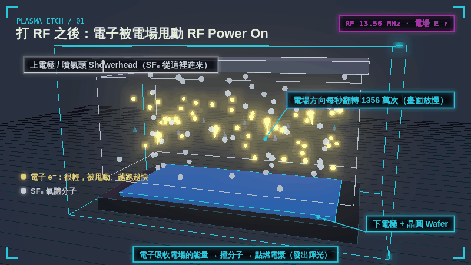
GIF 01
上下電極之間加 13.56 MHz 的射頻電壓，電場方向每秒翻轉 1356 萬次。電子很輕，被電場來回甩動、越跑越快；SF₆ 氣體則從上方的噴氣頭（showerhead）進來。
下載 1080P GIF（13.1 MB）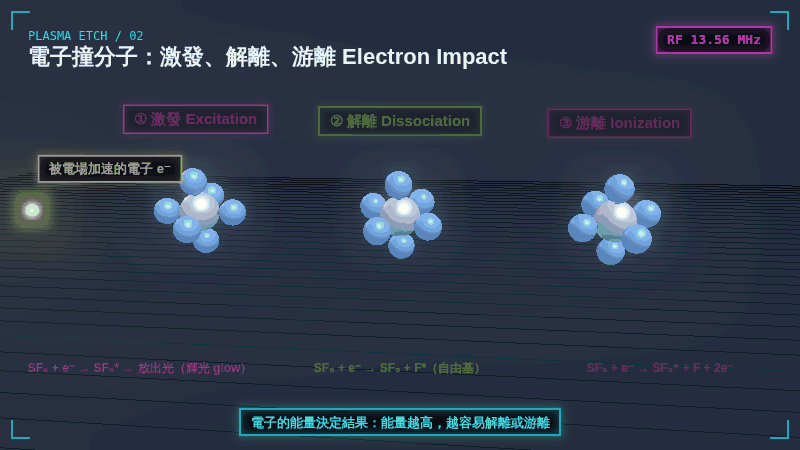
GIF 02
高能電子撞上 SF₆ 有三種結果：① 激發（excitation）→ 放出光，就是電漿的輝光；② 解離（dissociation）→ 產生氟自由基 F*；③ 游離（ionization）→ 產生正離子 SF₅⁺ 和多一顆電子。
下載 1080P GIF（9.6 MB）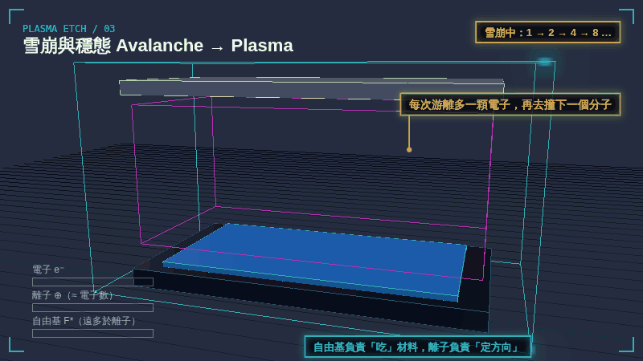
GIF 03
游離多出來的電子再去撞下一個分子，數量 1 → 2 → 4 → 8 倍增（雪崩），直到產生和損失（撞牆、復合）平衡。電漿裡的自由基遠多於離子：自由基負責「吃」，離子負責「定方向」。
下載 1080P GIF（16.4 MB）PART 2 / DIRECTION
同樣是電漿，只靠自由基就是等向性；在晶圓加上偏壓、讓離子垂直打下來，才會變成非等向性。
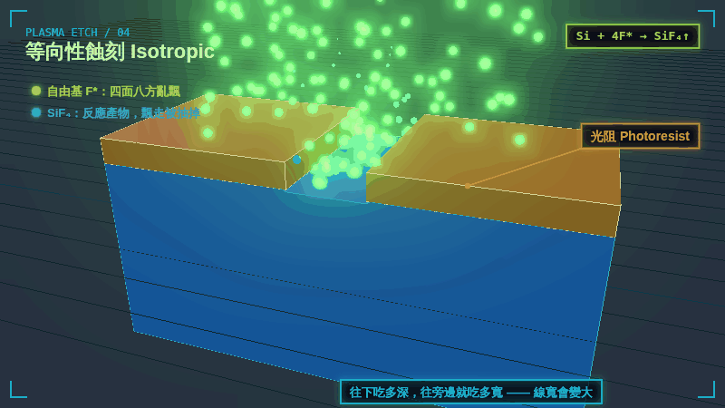
GIF 04
只有自由基時，粒子從四面八方抵達表面，Si + 4F* → SiF₄↑ 飄走。往下吃多深、往旁邊就吃多寬，鑽到光阻底下形成底切（undercut），線寬變大。
下載 1080P GIF（17.9 MB）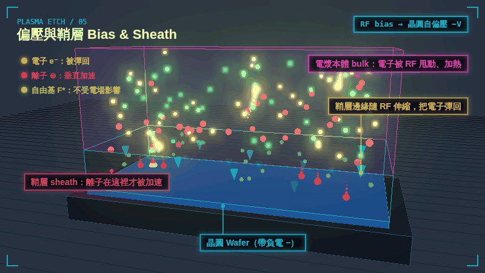
GIF 05
晶圓底座加 RF 偏壓，晶圓帶負的自偏壓，上方形成鞘層（sheath）。電子在電漿本體被加熱、碰到鞘層邊緣被彈回；離子在鞘層裡才被大幅加速、垂直撞向晶圓；自由基不帶電，完全不受影響。（畫面中的 RF 頻率已放慢）
下載 1080P GIF（16.6 MB）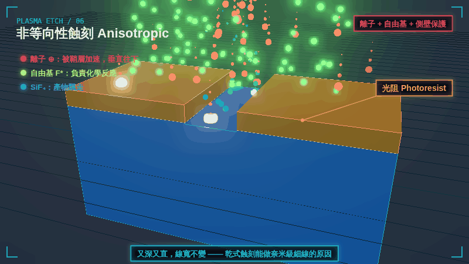
GIF 06
離子只打得到溝槽底部，打斷鍵結後自由基跟著反應，底部吃得快；側壁沒被離子打到，還長出一層保護膜（passivation），幾乎不動。結果是又深又直、線寬不變。
下載 1080P GIF（15.2 MB）| 粒子 | 電漿本體 bulk | 鞘層 sheath |
|---|---|---|
| 電子 e⁻ | 被 RF 來回甩動、獲得能量；鞘層邊緣伸縮時也會把電子「拍」回本體 | 被擋住、彈回（減速區） |
| 離子 ⊕ | 太重，跟不上 RF，只被弱電場慢慢帶向鞘層 | 主要加速區：被平均電壓垂直拉向晶圓 |
| 自由基 F* | 不帶電，隨機亂飄 | 一樣不受影響，四面八方抵達表面 |
PART 3 / SELECTIVITY
方向決定形狀，選擇比決定「會不會吃錯東西」。
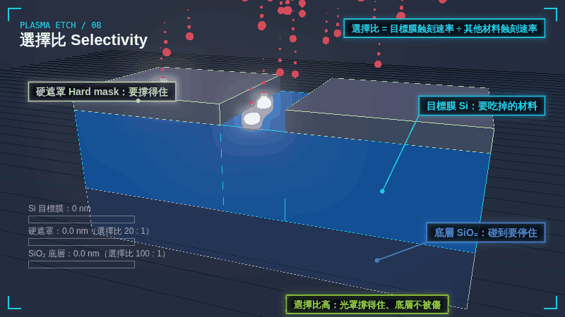
GIF 08
選擇比 = 目標膜蝕刻速率 ÷ 其他材料蝕刻速率。例如 Si 對硬遮罩 20 : 1，代表吃掉 60 nm 的 Si，硬遮罩只少 3 nm；Si 對底層 SiO₂ 100 : 1，代表碰到底層就幾乎停住（stop on layer）。
下載 1080P GIF（6.2 MB）PART 4 / NANOSHEET
Nanosheet 兩種蝕刻都要：刻鰭和源汲極凹槽靠非等向性，挖掉 SiGe 則是等向性、但選擇比要極高。
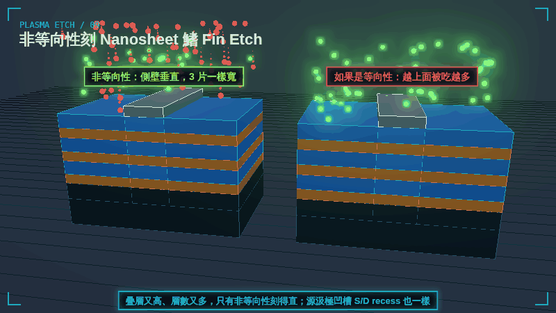
GIF 09
Si / SiGe 千層疊層又高、層數又多，必須垂直刻穿：側壁垂直時三片一樣寬，電流一致；如果是等向性，越上面的層被側向吃越多，三片寬度不一。之後的源汲極凹槽（S/D recess）也一樣要直。
下載 1080P GIF（13.4 MB）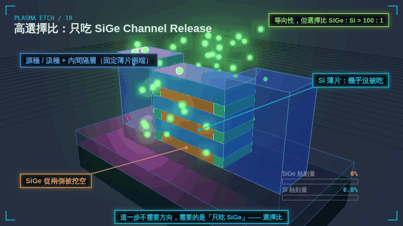
GIF 10
這一步不需要方向，需要的是「只吃 SiGe、不吃 Si」：SiGe 從兩側被挖空，Si 薄片幾乎沒被吃，靠源汲極和內間隔層固定兩端。選擇比 SiGe : Si 要大於 100 : 1。
下載 1080P GIF（12.5 MB）PART 5 / WHY NOT WET
濕蝕刻（泡藥水）便宜、選擇比也可以很高，但到了奈米級的細高結構有兩個致命問題。
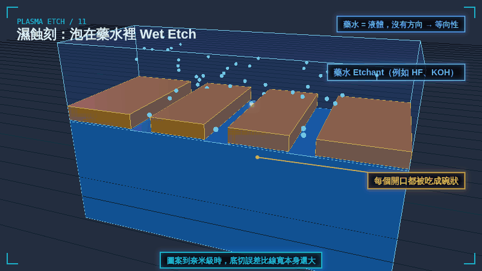
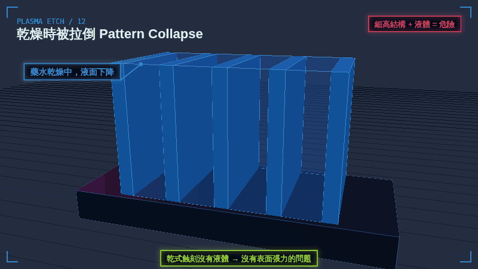
GIF 12
藥水乾燥時液面下降，相鄰細高結構之間的表面張力把它們往內拉，最後倒塌黏在一起（stiction）。乾式蝕刻沒有液體，沒有這個問題。
下載 1080P GIF（3.2 MB）| 比較項目 | 濕蝕刻 Wet | 等向性乾蝕刻 | 非等向性乾蝕刻 |
|---|---|---|---|
| 方向 | 全方向 | 全方向 | 垂直 |
| 選擇比 | 可以很高 | 可以很高 | 中～高（看化學與條件） |
| 細高結構 | 易底切、乾燥時會倒塌 | 沒有液體，不會倒塌 | 最適合 |
| 損傷 | 低 | 低 | 有離子轟擊 |
| 典型用途 | 清洗、去光阻、大面積移除 | 挖空犧牲層（如 SiGe 釋放）、灰化 | 定義線寬、刻鰭、溝槽、接觸窗 |
濕式製程並沒有被淘汰：晶圓清洗、去光阻和部分選擇性移除仍大量使用；只是「定義奈米級圖案」這件事交給了乾式電漿蝕刻。
RELATED
Nanosheet 為什麼取代 FinFET，以及 7 個製程步驟；GIF 09、10 就是其中的刻鰭與通道釋放。
同一套觀念的 2D 動畫影片版，附中文旁白與音效。
動畫為教學用示意：粒子數量、速度、RF 頻率、尺寸與數值都經過簡化或放慢，不是特定機台或製程的規格。網頁上顯示的是 800×450 的預覽；按「下載 1080P GIF」可取得 1920×1080 的原檔，循環播放、第一格就是完整畫面，可直接放進簡報。